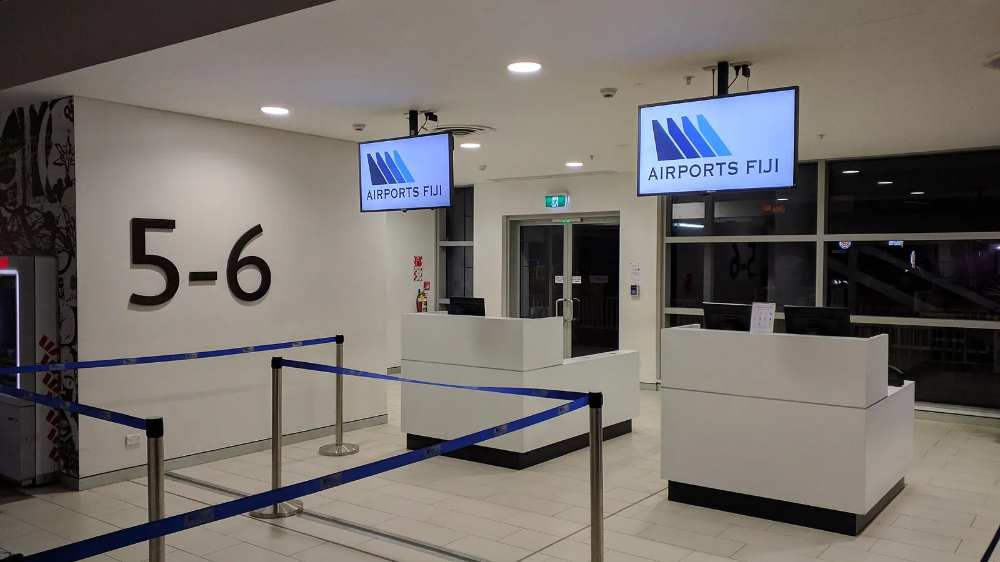
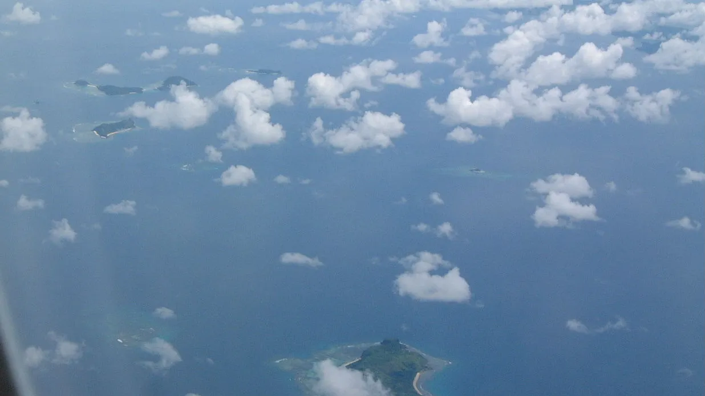
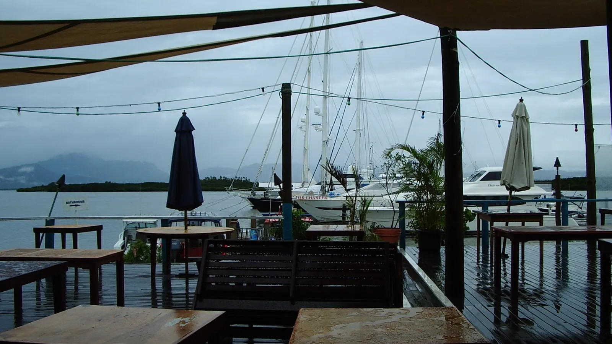
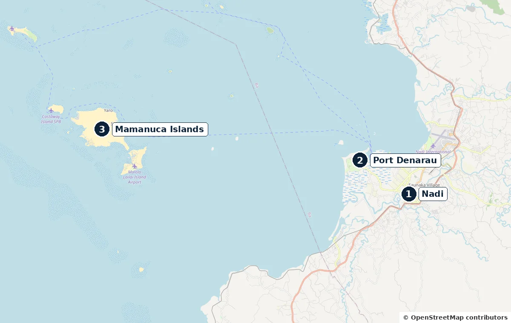

The classic Fiji honeymoon: a catamaran from Port Denarau to a small island resort in the Mamanuca or Yasawa Islands, three nights of lagoon, reef and sunsets, then a final night near the airport. We match the island to you: adults-only overwater bures for honeymooners, family resorts with kids' clubs, or remote Yasawa beaches. The night in Nadi before you fly home is there on purpose: boats from the islands run on fixed timetables and can be held up by weather, so we never put an island boat and an international flight on the same day.
See it for yourself
Photos from the journey





Where you go
The journey on one map

Day by day, in short
Daily travel brief
Distances are by road for the whole day. The full plan with timings comes with your detailed itinerary.
-
1
Arrive in Nadi and sail to your island
- Catamaran from Port Denarau: boats leave at set times; on a late arrival you spend the first night in Nadi.
- Pack a small bag with swimwear and sunscreen for the boat.
-
2
Reef and lagoon
- Guided snorkel trip: snorkel in pairs, wear a rash vest and never touch the coral.
- Most island resorts include non-motorised water sports.
-
3
Island village and free time
- Village visit: cover shoulders and knees; no hats in the village.
- Diving, manta-ray snorkelling (May to October in the Yasawas) and fishing can be booked on the island.
-
4
Catamaran back to the mainland
-
5
Fly home from Nadi
- Transfer to Nadi International Airport: be at the airport 3 hours before an international flight.
Local know-how
Travel hacks from our desk
Hotel deposit
Use a credit card for the deposit or pre-authorisation at check-in, never a forex or debit card. Forex cards cannot hold funds, many hotels refuse them, and a credit-card hold is released faster.
Fiji dollars
Fiji uses the Fiji dollar. Cards work in resorts, Denarau and Nadi; carry small cash for villages, markets and tips. Resort prices on the islands are high, so plan for meals there.
Village etiquette
In a Fijian village, cover shoulders and knees (a sarong is fine), take off hats and sunglasses, never touch anyone's head, and wait to be invited in. Visitors bring a small gift of kava root (sevusevu); your guide arranges it. Sunday is for church and rest in the villages.
Sun and sea
The tropical sun is strong: use reef-safe sunscreen and a rash vest. Swim and snorkel only where your resort or crew says it is safe, wear reef shoes, and do not touch or stand on coral.
Fiji time
Life is relaxed. Boats and transfers run to timetables but may change with the weather; build in time and keep the day of your flight home free.
When to go
Best time to visit for this journey
May to October.
May to October is the dry season: sunny, less humid and the best time for the islands; July and the school holidays are busiest. November to April is hot and wet, with a risk of cyclones from December to March.
The package
What's included
Included
- 3 nights on an island resort with breakfast
- 1 night in Nadi with breakfast
- Airport welcome with shell lei
- All transfers
- Scheduled catamaran to and from the island
- Non-motorised water sports as offered by the resort
- 24/7 support from Blue Diamond Voyage
Not included
- International flights
- Meals other than breakfast unless stated
- Drinks
- Optional excursions
- Tips
- Travel insurance
- Island resort meal plans (often required; we quote them with the resort)
The detailed itinerary
Some journeys are planned. Ours are crafted.
The full 5-day plan is ready: hour-by-hour timings, drive times, temple dress codes, food for your diet and a route map for every day. Tell us your dates and your city, and we'll send it to you on WhatsApp, shaped around you.
- Hour-by-hour timings
- A route map for every day
- Hotel and room details
- Visa and entry steps
- Vegetarian and Jain dining
24/7 travel desk+91 97148 59797+91 98242 21400
Photo and map credits
- Nadi International Airport: Grendelkhan, CC BY-SA 3.0, via Wikimedia Commons
- Mamanuca Islands: Hermann Luyken, CC BY-SA 3.0, via Wikimedia Commons
- Mamanuca Islands: Hermann Luyken, CC BY-SA 3.0, via Wikimedia Commons
- Port Denarau Marina: Bryan Davis, CC BY-SA 2.0, via Wikimedia Commons
- Nadi International Airport: Grendelkhan, CC BY-SA 3.0, via Wikimedia Commons
- Maps: © OpenStreetMap contributors; road routes by OSRM.